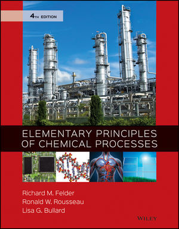
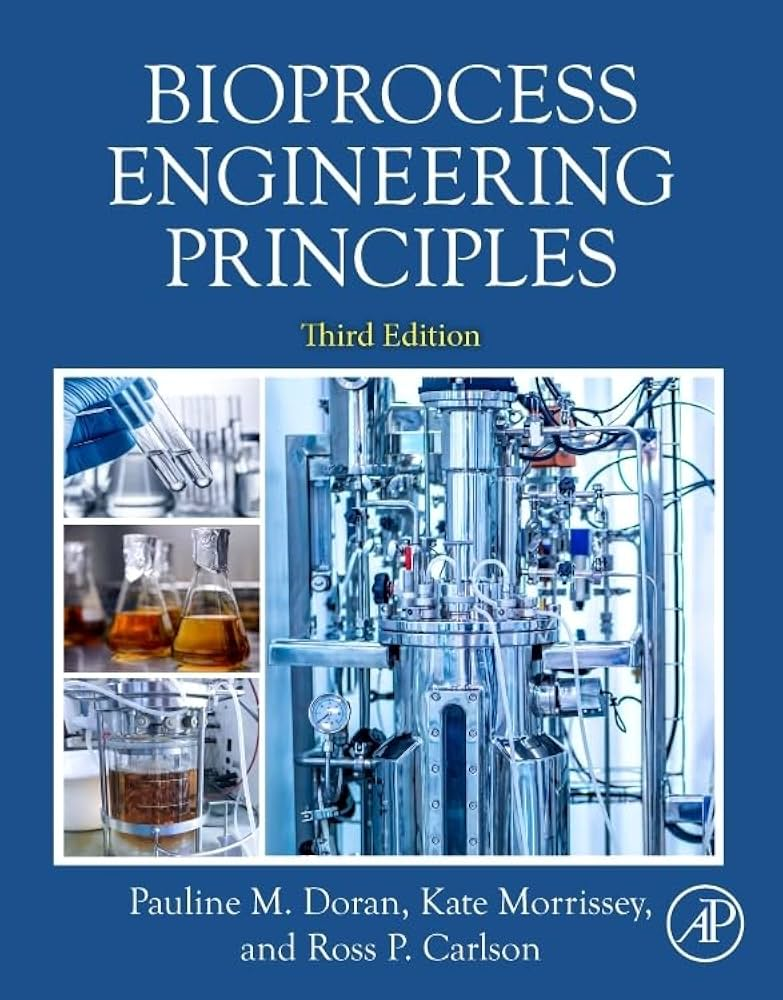

● ملخصات:
ملخص مبادئ كيمياء
● شروحات:
- أنس أحمد
- زايد صالح
● كتب:
1- Elementary Principles of Chemical Processes — Richard M. Felder, Ronald W. Rousseau, Lisa G. Bullard
2- Basic Principles and Calculations in Chemical Engineering — David M. Himmelblau, James B. Riggs
3- Chemical Engineering: An Introduction — Morton M. Denn
● ملخصات:
ملخص توازنات
● شروحات:
- أحمد فايز
● كتب:
1- Elementary Principles of Chemical Processes — Richard M. Felder, Ronald W. Rousseau, Lisa G. Bullard
2- Basic Principles and Calculations in Chemical Engineering — David M. Himmelblau, James B. Riggs
3- Material and Energy Balances for Chemical Engineers — Gavin Towler

● ملخصات:
ملخص تحليلية
● شروحات:
- أحمد الشرعة
- سناء جعفر
● كتب:
1- Quantitative Chemical Analysis — Daniel C. Harris
2- Fundamentals of Analytical Chemistry — Douglas A. Skoog, Donald M. West, F. James Holler, Stanley R. Crouch
3- Analytical Chemistry — Gary D. Christian, Purnendu K. Dasgupta, Kevin A. Schug
● ملخصات:
● شروحات:
- هندسة كيميائية بسيطة
● كتب:
1- Unit Operations of Chemical Engineering — Warren L. McCabe, Julian C. Smith, Peter Harriott
2- Transport Processes and Separation Process Principles — Christie J. Geankoplis
3- Coulson & Richardson's Chemical Engineering, Volume 2: Particle Technology and Separation Processes
● ملخصات:
● شروحات:
- شهد زعيتر
● كتب:
1- Bioprocess Engineering Principles — Pauline M. Doran
2- Biochemical Engineering Fundamentals — James E. Bailey, David F. Ollis
